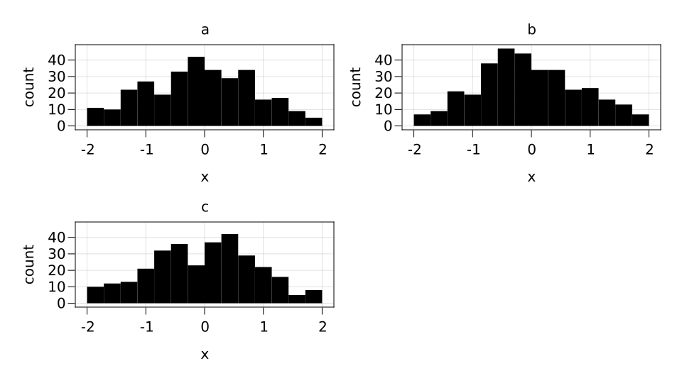
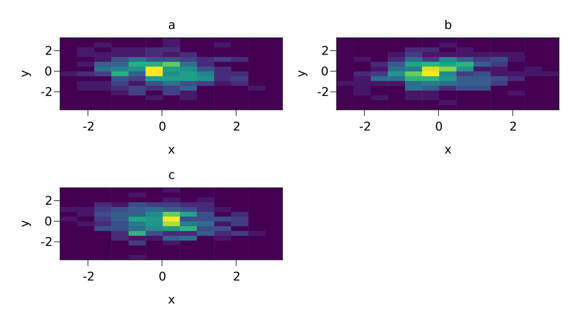
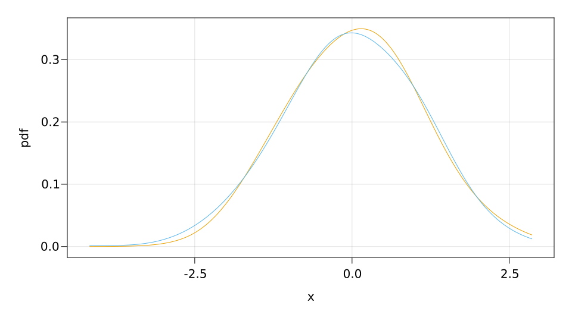
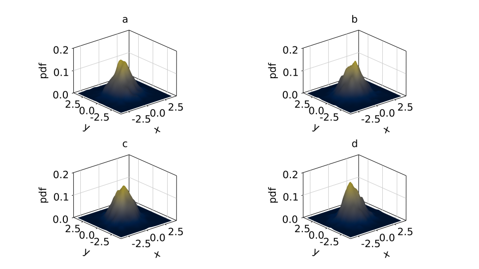

Analyses
Histogram
SplitApplyPlot.histogram — Functionhistogram(; bins=automatic, wts=automatic, normalization=:none)Compute a histogram. bins can be an Int to create that number of equal-width bins over the range of values. Alternatively, it can be a sorted iterable of bin edges. The histogram can be normalized by setting normalization. Possible values are:
:pdf: Normalize by sum of weights and bin sizes. Resulting histogram has norm 1 and represents a PDF.:density: Normalize by bin sizes only. Resulting histogram represents count density of input and does not have norm 1.:probability: Normalize by sum of weights only. Resulting histogram represents the fraction of probability mass for each bin and does not have norm 1.:none: Do not normalize.
Weighted data is supported via the keyword wts.
using SplitApplyPlot, CairoMakie
df = (x=randn(1000), y=randn(1000), z=rand(["a", "b", "c"], 1000))
specs = data(df) * mapping(:x, layout=:z) * histogram(bins=range(-2, 2, length=15)) * visual()
draw(specs)
data(df) * mapping(:x, :y, layout=:z) * histogram(bins=15) |> draw
Density
SplitApplyPlot.density — Functiondensity(; extrema, npoints, kernel, bandwidth)Fit a kernel density estimation of data.
using SplitApplyPlot, CairoMakie
df = (x=randn(5000), y=randn(5000), z=rand(["a", "b", "c", "d"], 5000))
data(df) * mapping(:x, layout=:z) * SplitApplyPlot.density() |> draw
data(df) * mapping(:x, :y, layout=:z) * SplitApplyPlot.density(npoints=50) |> draw
specs = data(df) * mapping(:x, :y, layout=:z) *
visual(Surface, colormap=:cividis) *
SplitApplyPlot.density(npoints=50)
draw(specs, axis=(type=Axis3, zticks=0:0.1:0.2, limits=(nothing, nothing, (0, 0.2))))
Linear
using SplitApplyPlot, CairoMakie
df = (x=randn(30), y=randn(30), z=rand(["a", "b", "c"], 30))
specs = data(df) * mapping(:x, :y, color=:z) * (linear() + visual(Scatter))
draw(specs, axis=(; limits=(-2, 2, -2, 2)))This page was generated using Literate.jl.